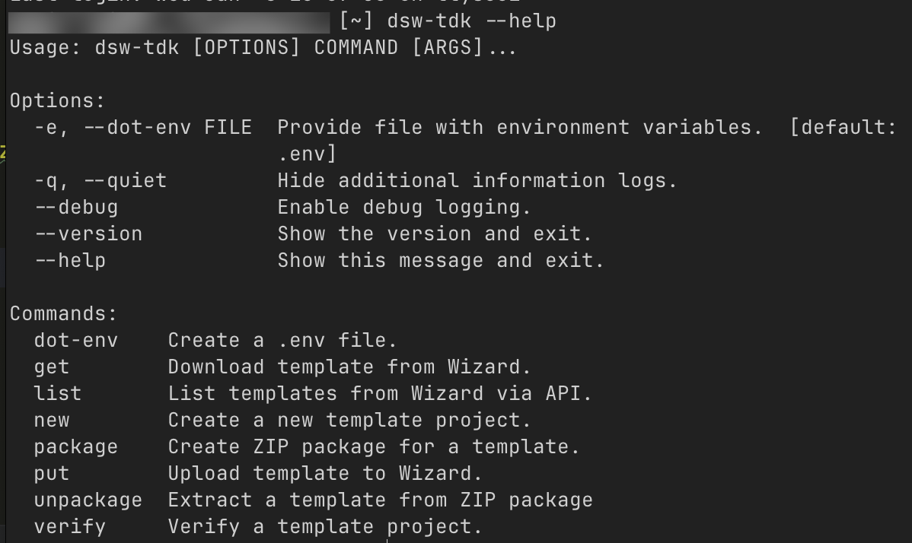

DSW-TDK - instalace a základní použití
- Jeden z nejsnazších a nejpříjemnějších způsobů, jak upravovat document templaty v rámci Data Stewardship Wizardu/FAIR Wizardu (dále budu používat už jenom zkratku DSW, protože je to kratší) je pomocí CLI (Command line interface) nástroje DSW-TDK
- TDK je tedy nástroj, který se spouští v terminálu a umožňuje automaticky (přes DSW API) stahovat document templaty, testovat změny živě v rámci DSW a následně nahrát upravený document template zpět do aplikace
Alternativy k použití TDK je a) editovat soubory přímo na webu DSW, v integrovaném editoru, nebo b) ručně stáhnout zip archiv, dekomprimovat ho, zeditovat soubory, znovu zazipovat a ručně nahrát zpátky.
Editování na webu není nic moc, protože ten integrovaný editor není příliš dobrý, navíc na webu nejde editovat všechno, ruční stahování a opětovné nahrávání je zbytečně zdlouhavé a nechává velký potenciál pro chyby.
- První krok je DSW-TDK nainstalovat
Instalace DSW-TDK
- Jak už jsem uváděla tady DSW-TDK není distribuovaný jako instalační/executable soubor, jak jste nejspíš zvyklí, ale jako Python balíček
- Python balíčky jsou Python programy, které si můžete stáhnout a nějak je používat (buď samostatně, jako TDK, nebo jako knihovnu ve vašich vlastních Python programech)
- Abychom mohli TDK používat, musíme mít na našem počítači nainstalovaný Python
- Pokud máte už Python nainstalovaný, otevřete terminál a napište tam tenhle příkaz
pip install dsw-tdk
Co tenhle příkaz dělá?
- První část
pipvolá Python Package Index. To je další CLI nástroj, který se nainstaloval jako součást Pythonu, který slouží ke stahování Python programů z oficiálního Pythoního repozitáře PyPi - Druhá část
installnám říká, kterou funkci pipu voláme. Install říká, že chceme nainstalovat nový balíček. Kromě instalace bychom mohli chtít balíček třeba smazat, nebo aktualizovat. Pro seznam všech pip příkazů a jak je používat, napištepip --helppro nápovědu - Poslední část
dsw-tdknám říká, jaký balíček stáhnout
Pokud byste někdy chtěli začít programovat v Pythonu a psát svoje vlastní programy, instalovat balíčky takhle globálně je obecně špatný nápad. Funguje to u samostatných programů, jako je DSW-TDK, ale nikdy takhle nestahujte třeba knihovny Vždycky, když byste potřebovali nějakou knihovnu stáhnout, omezte jí na jednotlivý projekt pomocí virtuálního prostředí. Hezký úvod do toho, proč a jak používat virtuální prostředí má třeba můj oblíbený NaucSePython
- Pokud vidíte ve svém terminálu spoustu rychle běžícího textu, který začíná "downloading" tak to je správně. dsw-tdk si stahuje python balíčky, které samo používá
- Ověřte, že se tdk nainstalovalo tím, že do terminálu napíšete
dsw-tdk --help
Nastavení prostředí, ověření
- Teď když máme DSW-TDK nainstalové, je potřeba naší DSW instanci nějak říct, že chceme komunikovat přímo s ní a že jsme oprávněný uživatel
- DSW na tohle používá autentizaci pomocí tokenu
Token je dlouhý, náhodný a unikátní textový řetězec, který se bude posílat na DSW server spolu s vašim API requestem (příkazem přes DSW-TDK), který slouží pro ověření oprávněnosti. Slouží místo jména a hesla.
- Adresu serveru a autentizační token dostanete od svého admina (v případě FW instance v KNAV tedy ode mě, nebo od Jindřicha)
- Buď můžete při každém úkonu, který vyžaduje ověření ručně kopírovat adresu DSW serveru a token, nebo můžete využít pohodlné vychytávky, kterou tdk nabízí - enviromentální proměnné
Generování nového dotenv souboru
Pomocí terminálu se odnavigujte do složky, kam si chcete stáhnout daný document template
Složka musí být prázdná. Můžete si vytvořit novou pomocí
mkdir. Pak se do ní přescdodnavigujte.
- Napište příkaz
dsw-tdk --help
Jak už jste si možná všimli, příkaz --help je používaný standardně většinou CLI nástrojů k zobrazení nápovědy a seznamu příkazů
Dostanete tohle: 
- Všimněte si hned prvního příkazu (pod "Commands")
dot-env - Co tenhle příkaz dělá? Tenhle příkaz nám vytvoří skrytý soubor ".env", který slouží k tomu, aby se v něm ukládala tajemství. V našem případě tedy adresa serveru, s kterým chceme komunikovat a autorizační token
EXTRÉMNĚ DŮLEŽITÉ: .env soubor, ani token samotný nikam neposílejte, nenahrávejte, nepřenášejte na jiné zařízení, nemějte na sdíleném počítači, nebo cokoliv jiného. Přistupujte k tomu stejně, jako k loginu a heslu do DSW, nebo do Vaší banky
Kdyby se vám něco tohoto typu stalo (třeba jste, já nevím, pushnuli .env soubur i s tokenem a adresou do veřejného repozitáře na Githubu, ehm) hned kontaktujte admina vaší instance, on ten leaknutý token vymaže a vygeneruje vám nový
- Pokud jste ve správné složce, spusťte tedy příkaz pro tvorbu .env souboru -
dsw-tdk dot-env - Po chvilce čekání vás terminál vyzve, abyste zadali adresu pro API cally vaší DSW instance. V terminálu se objeví nápis
API URL:Nakopírujte tam URL adresu, kterou vám poskytnul váš admin a zmáčkněte Enter - Objeví se druhé pole, které chce vyplnit autorizační token, poskytnutý od vašeho admina.
API key:Vyplňte i to a zmáčkněte "Enter" - Ověřte, že se úspěšně vytvořil soubor .env pomocí příkazu
ls -a, který vypíše všechny soubory ve složce, včetně skrytých souborů -
V případě úspěchu by měl terminál vypsat něco takového
. .. .env -
V průzkumníku souborů odnavigujte do složky, kde jste právě soubor vytvořili a otevřete ho (pokud máte nastavenou viditelnost skrytých souborů - Win + H na Windows, Command + Shift + . na MacOS, na Linuxu obvykle Super + H), otevřete ho ve VSCodu
- Mělo by to vypadat nějak takto:
- Pokud jste předtím špatně napsali adresu, nebo token, můžete to nyní napravit
Otestování funkcionality
Nyní si pojďme zkusit příkazem zavolat nějaká dataz naší DSW instance!
- Otevřete si integrovaný terminál ve VSCode (CTRL+Shift+P/Cmd+Shift+P a napište View: Toggle terminal a zmáčkněte Enter). To otevře novou instanci příkazové řádky ve VSCodu. Funguje úplně stejně jako terminál, s kterým jste dosud pracovali
- Pomocí dsw-tdk --help si vyvolejte seznam základních příkazů
- Zkuste si nechat vypsat seznam všech dostupných Document templatů pomocí dsw-tdk list (bez pomlčky, protože vývojáři kašlou na standardy)
- Pokud se vám zobrazil seznam Document templatů, máte vše nastaveno správně
- Pokud ne, zkontrolujte si, že jste ve stejné složce jako váš .env soubor
- Zkontrolujte si, že máte správně vyplněné API URL a API key
- Tímto je váše vývojové prostředí správně nastavené a jste připraveni pustit se do úprav Document templatů
DSW-TDK příkazy a jejich vysvětlení
- dot-env - vytvoří nový .env file
- get - stáhne Document template, jehož ID se napíše za příkaz do složky, v které se zrovna nacházíte
- list - vypíše seznam všech Document templatů, dostupných na dané DSW instanci
- new - vytvoří kostru nového Document templatu
- package - zazipuje Document template. Musí být voláno z kořenové složky daného templatu (ne ze src)
- put - zazipuje a rovnou nahraje document template do DSW. Musí být voláno z kořenové složky daného templatu (ne ze src)
- unpackage - rozbalí zip archiv, který obsahuje Document template
- verify - zkontroluje, zda je Document template v pořádku - vypíše informace z metamodelu, templatem podporované formáty, indexované soubory